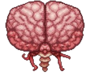
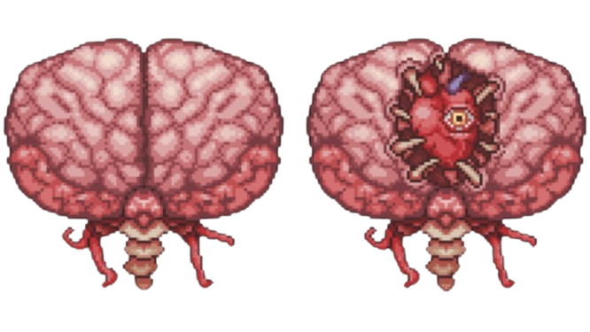

The Brain of Cthulhu is a giant floating brain found in the Crimson biome.
In its first form, the Brain of Cthulhu is invicibile, invulenerable to any attacks.
Its attacks consist of teleporting randomly near the player and summoning Creeper Minions to attack.
Once all the Creeper Minions are defeated, the Brain of Cthulhu enters its second form, making it vulnerable to attacks.
Its health alone becomes 2709 and it has a decreased knockback resist to 65%.
In its appearance, the Brain of Cthulhu opens up its center, revealing fangs that are enveloping a beating heart with an eye near the middle.
The attacks are much more aggressive. Similar to the Eye of Cthulhu, the Brain of Cthulhu quickly rams into its player.
The attacks are charged up as the Brain of Cthulhu creates 4 illusions of itself surrounding the player.
These illusions slowly get closer and quicker to the player until the real one reveals itself, dashing into the player.
The Brain of Cthulhu can be summoned within the Crimson Biome if 3 Crimson Hearts are destroyed.
When the first Crimson Heart is destroyed, a warning is sent to the player: "A horrible chill goes down your spine..."
When the second Crimson Heart is destroyed, the second message is sent to the player: "Screams echo around you..."
When the third Crimson Heart is destroyed, the player is greeted with the arrival of the boss Eater of Worlds and the message: "Brain of Cthulhu has awoken!"
The Brain of Cthulhu can be manually summoned using the Bloody Spine at anytime in the Crimson biome.
Bloody Spine can be crafted using the following items on a Demon/Crimson Altar:
The Brain of Cthulhu is a Crimson-Exclusive boss, only found in Crimson generated worlds. Its counter-part, the Corruption world, is the boss Eater of Worlds.
